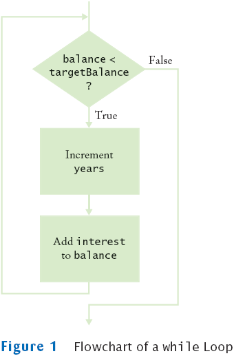
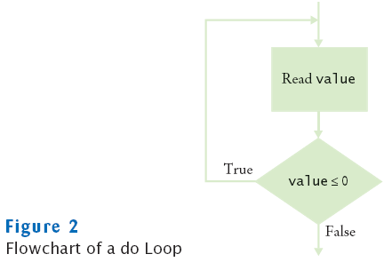
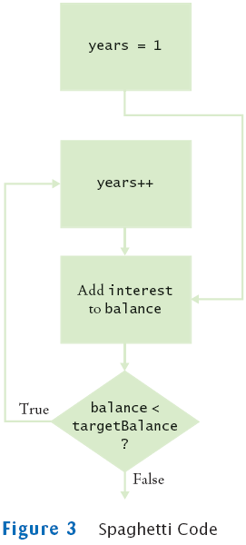
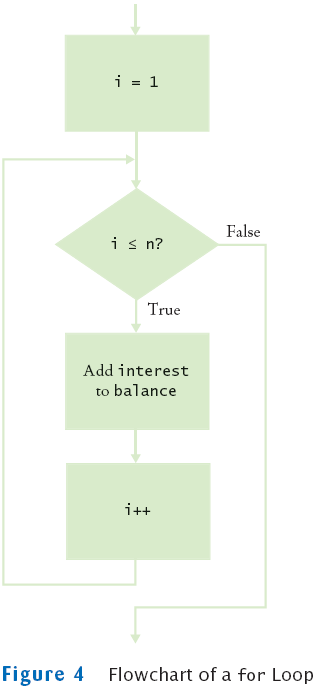
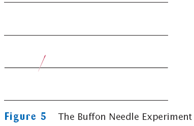
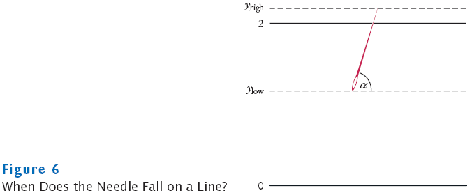

Chapter 7
Iteration
Chapter Goals
- To be able to program loops with the while, for,
and do statements
- To avoid infinite loops and off-by-one errors
- To understand nested loops
- To learn how to process input
- To implement simulations
while Loops
- Executes a block of code repeatedly
- A condition controls how often the loop is executed
while (condition)
statement;
- Most commonly, the statement is a block statement (set of
statements delimited by { })
Calculating the Growth of an Investment
- Invest $10,000, 5% interest, compounded annually
Year
|
Balance
|
0
|
$10,000
|
1
|
$10,500
|
2
|
$11,025
|
3
|
$11,576.25
|
4
|
$12,155.06
|
5
|
$12,762.82
|
Calculating the Growth of an Investment
- When has the bank account reached a particular balance?
while (balance < targetBalance)
{
year++;
double interest = balance * rate / 100;
balance = balance + interest;
}
File Investment.java
File InvestmentTester.java
Output
The investment doubled after 15 years
while Loop Flowchart

Syntax 7.1: The while Statement
| |
while (condition)
statement
|
Example:
| |
while (balance < targetBalance)
{
year++;
double interest = balance * rate / 100;
balance = balance + interest;
}
|
Purpose:
To repeatedly execute a statement as long as a condition is true |
Self Check
- How often is the statement in the loop
while (false) statement;
executed?
- What would happen if RATE was set to 0 in the main
method of the InvestmentTester program?
Answers
- Never
- The waitForBalance method would never return due to an
infinite loop
Common Error: Infinite Loops
-
int years = 0;
while (years < 20)
{
double interest = balance * rate / 100;
balance = balance + interest;
}
-
int years = 20;
while (years > 0)
{
years++; // Oops, should have been years--
double interest = balance * rate / 100;
balance = balance + interest;
}
- Loops run forever–must kill program
Common Error: Off-by-One Errors
Avoiding Off-by-One Error
- Look at a scenario with simple values:
initial balance: $100
interest rate: 50%
after year 1, the balance is $150
after year 2 it is $225, or over $200
so the investment doubled after 2 years
the loop executed two times, incrementing years each time
Therefore: years must start at 0, not at 1.
- interest rate: 100%
after one year: balance is 2 * initialBalance
loop should stop
Therefore: must use <
- Think, don't compile and try at random
do Loops
- Executes loop body at least once:
do
statement
while (condition);
-
Example: Validate input
double value;
do
{
System.out.print("Please enter a positive number: ");
value = in.nextDouble();
}
while (value <= 0);
- Alternative:
boolean done = false;
while (!done)
{
System.out.print("Please enter a positive number: ");
value = in.nextDouble();
if (value > 0) done = true;
}
do Loop Flowchart

Spaghetti Code

for Loops
- for (initialization; condition; update)
statement
- Example:
for (int i = 1; i <= n; i++)
{
double interest = balance * rate / 100;
balance = balance + interest;
}
- Equivalent to
initialization;
while (condition)
{ statement; update; }
- Other examples:
for (years = n; years > 0; years--) . . .
for (x = -10; x <= 10; x = x + 0.5) . . .
Flowchart for for Loop

Syntax 7.2: The for Statement
| |
for (initialization; condition; update)
statement |
Example:
| |
for (int i = 1; i <= n; i++)
{
double interest = balance * rate / 100;
balance = balance + interest;
} |
Purpose:
To execute an initialization, then keep executing a statement and
updating
an expression while a condition is true |
File Investment.java
File InvestmentTester.java
Output
The balance after 20 years is 26532.98
Self Check
- Rewrite the for loop in the waitYears
method as a while loop
- How many times does the following for loop execute?
for (i = 0; i <= 10; i++)
System.out.println(i * i);
Answers
-
int i = 1;
while (i <= n)
{
double interest = balance * rate / 100;
balance = balance + interest;
i++;
}
- 11 times
Common Errors: Semicolons
Nested Loops
- Create triangle pattern
[]
[][]
[][][]
[][][][]
- Loop through rows
for (int i = 1; i <= n; i++)
{
// make triangle row
}
- Make triangle row is another loop
for (int j = 1; j <= i; j++)
r = r + "[]";
r = r + "\n";
- Put loops together → Nested loops
File Triangle.java
File TriangleTester.java
Output
[]
[][]
[][][]
[]
[][]
[][][]
[][][][]
[][][][][]
[][][][][][]
[][][][][][][]
[][][][][][][][]
[][][][][][][][][]
[][][][][][][][][][]
[][][][][][][][][][][]
[][][][][][][][][][][][]
[][][][][][][][][][][][][]
[][][][][][][][][][][][][][]
[][][][][][][][][][][][][][][]
Self Check
- How would you modify the nested loops so that you print
a square instead of a triangle?
- What is the value of n after the following nested loops?
int n = 0;
for (int i = 1; i <= 5; i++)
for (int j = 0; j < i; j++)
n = n + j;
Answers
- Change the inner loop to for (int j = 1; j <=
width; j++)
- 20
Processing Sentinel Values
Loop and a half
File InputTester.java
File DataSet.java
Output
Enter value, Q to quit: 10
Enter value, Q to quit: 0
Enter value, Q to quit: -1
Enter value, Q to quit: Q
Average = 3.0
Maximum = 10.0
Self Check
- Why does the InputTester class call in.next
and not in.nextDouble?
- Would the DataSet class still compute the correct
maximum if you simplified the update of the maximum field in
the add method to the following statement?
if (maximum < x) maximum = x;
Answers
- Because we don't know whether the next input is a
number or the letter Q.
- No. If all input values are negative, the maximum is also
negative. However, the maximum field is initialized with 0.
With this
simplification, the maximum would
be falsely computed as 0.
Random Numbers and Simulations
File Die.java
File DieTester.java
Output
6 5 6 3 2 6 3 4 4 1
Second Run
3 2 2 1 6 5 3 4 1 2
Buffon Needle Experiment

Needle Position

Needle Position
- Needle length = 1, distance between lines = 2
- Generate random ylow between 0 and 2
- Generate random angle α between 0 and 180 degrees
- yhigh = ylow +
sin(
α)
- Hit if yhigh ≥ 2
File Needle.java
File NeedleTester.java
Output
Tries = 10000, Tries / Hits = 3.08928
Tries = 1000000, Tries / Hits = 3.14204
Self Check
- How do you use a random number generator to simulate
the toss of a coin?
- Why is the NeedleTester program not an efficient method
for computing π?
Answers
- int n = generator.nextInt(2); // 0 = heads, 1 =
tails
- The program repeatedly calls Math.toRadians(angle). You
could simply call Math.toRadians(180) to compute π